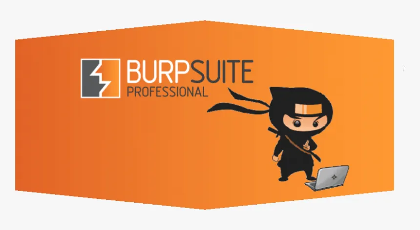
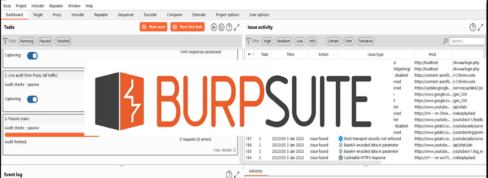

Que es Burpsuite ?

Burp Suite es una herramienta de ciberseguridad usada para analizar aplicaciones web. Permite interceptar, modificar y estudiar el tráfico entre el navegador y el servidor.
Es ampliamente utilizada por hackers éticos y pentesters para detectar vulnerabilidades como fallos de autenticación, inyecciones SQL y problemas de seguridad en formularios web.
Ejemplo de uso de Burp Suite

Burp Suite puede interceptar una petición de login y permitir al usuario modificar los datos antes de enviarlos al servidor.
Por ejemplo, un pentester puede cambiar parámetros como usuario o contraseña para probar si la aplicación valida correctamente la autenticación.
Sobre este tema
Este foro explica herramientas de hacking ético utilizadas en auditorías de seguridad web.
Funciones de Burp Suite
Incluye módulos como Proxy, Repeater e Intruder para pruebas de seguridad avanzadas.
Importante

Burp Suite debe usarse únicamente en entornos autorizados como laboratorios o bug bounty.